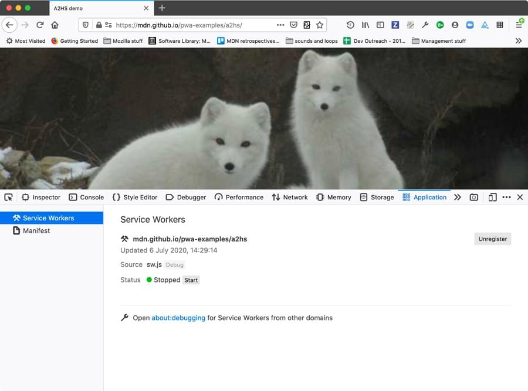

The Application panel provides tools for inspecting and debugging modern web apps (also known as Progressive Web Apps). This includes inspection of service workers and web app manifests.

The Application panel is available on the standard DevTools tab menu under Application, in Firefox 79+. If you can’t see it there, you can enable it by going to the "three dot" menu and selecting Settings (also accessible by pressing F1), then checking the Application checkbox under Default Developer Tools.
If you want to test this functionality and you don't have a handy PWA available, you can grab one of our simple examples to use: